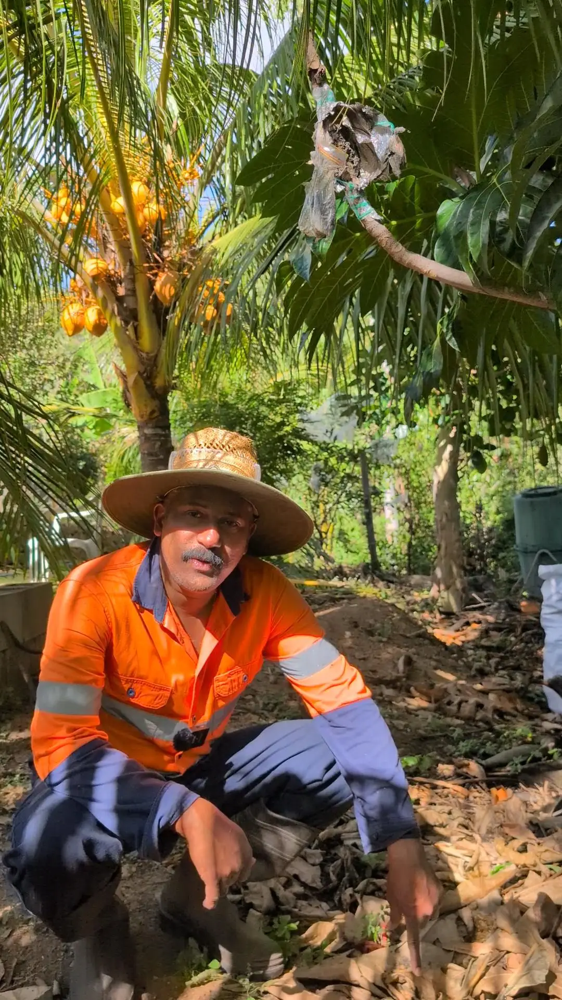

A first-hand record of Australian life for the global Malayali community — built one video at a time from a backyard in Queensland. ഓസ്ട്രേലിയയിലെ ജീവിതം, ജോലി, കുടിയേറ്റം എന്നിവയെപ്പറ്റി ഒരു സാധാരണ മലയാളിയുടെ അനുഭവങ്ങൾ.
An independent, personal media brand — not affiliated with any government or migration agency.
Australian Jeevitham (ഓസ്ട്രേലിയൻ ജീവിതം) began almost by accident. What kept it going is simple: countless Malayalis will never get the chance to visit Australia themselves, and this channel gives them a direct, honest window into what life here actually looks like.
Alongside everyday moments — cooking, gardening, family life — the channel shares genuine information about real job opportunities in Australia and the practical realities of migration, told from personal experience rather than marketing or sales pitches.

Backyard harvest dayEverything shown has been personally lived or filmed — no stock footage, no secondhand claims.
We are not migration agents, recruiters, or a government body. Where professional advice is needed, we say so and point to the right registered authority.
Made for Malayalis considering, planning, or curious about a life in Australia — in both English and Malayalam.